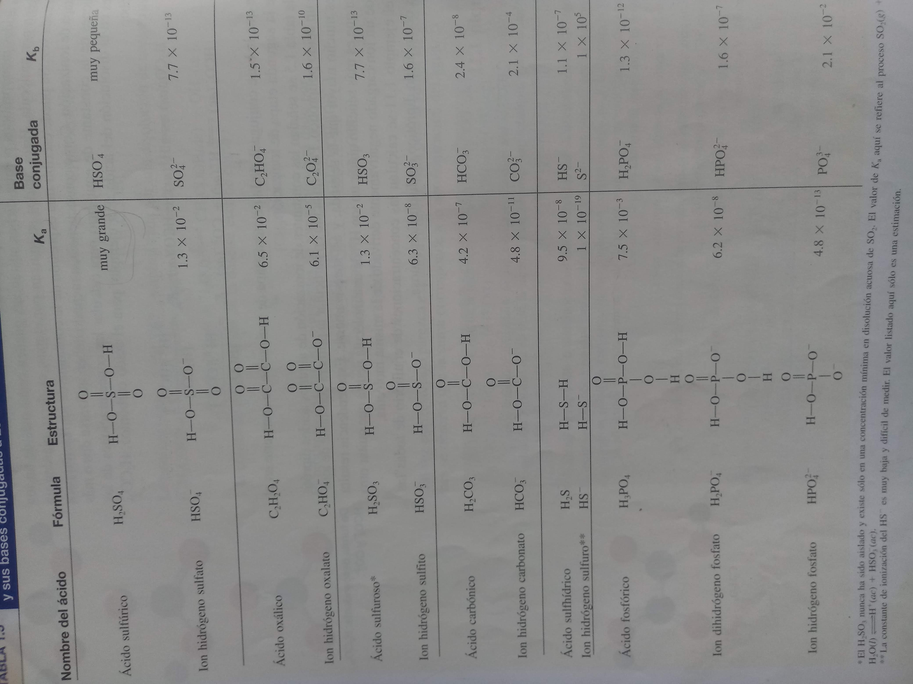
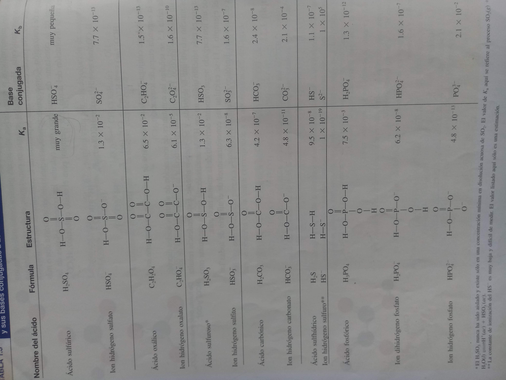

| donde no va el valor | limite del valor |
|---|---|
| exponte | -323 o 323 |
| moles | 1 |
| ka o kb | 10 |
no todas las Kb y Ka estan hay en esas tablas
no es necesario poner notación científicas
*el código está escrito en inglés-español (pero el lenguaje de programación es javascript) pero para se va terminar en ingles corrigiendo algunas palabras como pasos
*para optimizar algoritmos y trabajar en todos los casos menos un caso son generales con la mayoría de los
algoritmos así que si dentro del procedimiento puede que se repite el valor de respuesta en el procedimiento y es por
la programación y por el algoritmo general pero esto se va corregir
repite el valor de respueta en el procedimiento y es por la progrmacion
*las tablas con ka y kb son una foto para hacer mas rapido el prooceso programacion
 

hacer tareas mediante ese algorimo
y el uso que le encuetres
intruduce la cantidad de moles nesesarias por (ahora va ser si el ejercio las da y no toca calcularlas)
intruduce la cantidad de Ka si te piden de una sutancia especifica en las tablas puedes encontrar la Ka
intruduce la cantidad de moles nesesarias por (ahora va ser si el ejercio las da y no toca calcularlas)
intruduce la cantidad de Kb si te piden de una sutancia especifica en las tablas puedes encontrar la Kb
trbajando en eso
trbajando en eso
trbajando en eso
trbajando en eso